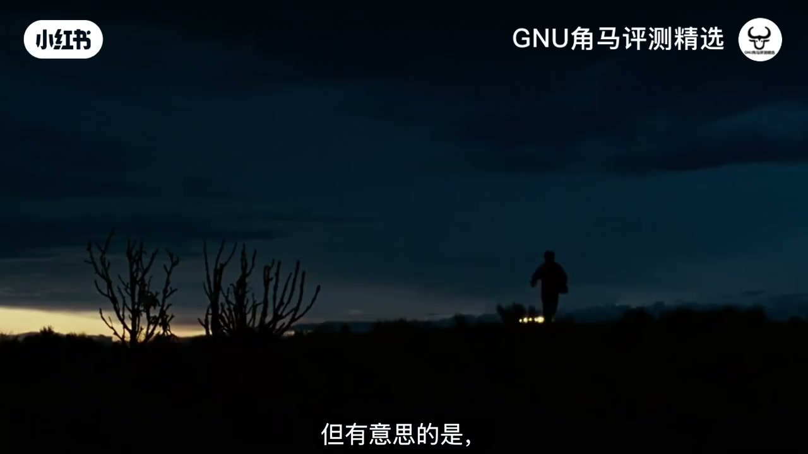
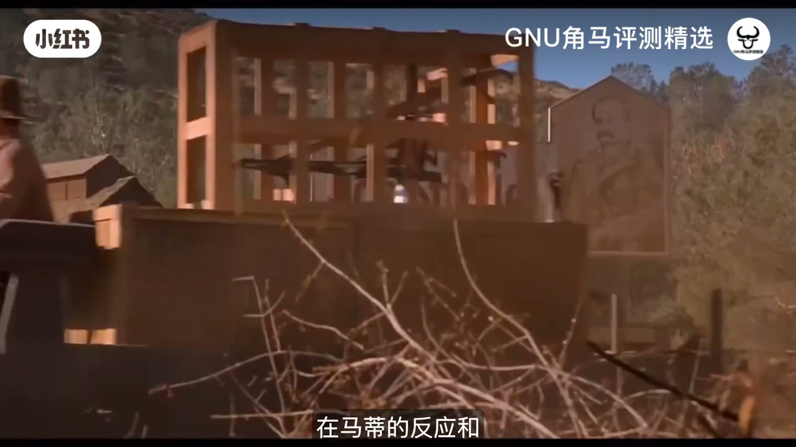
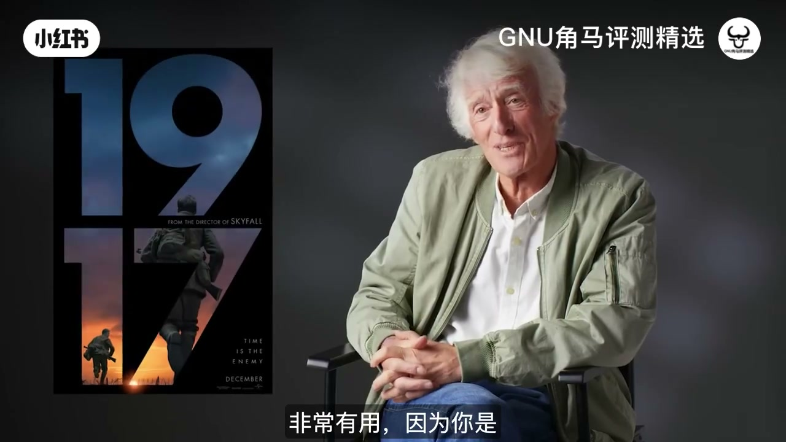
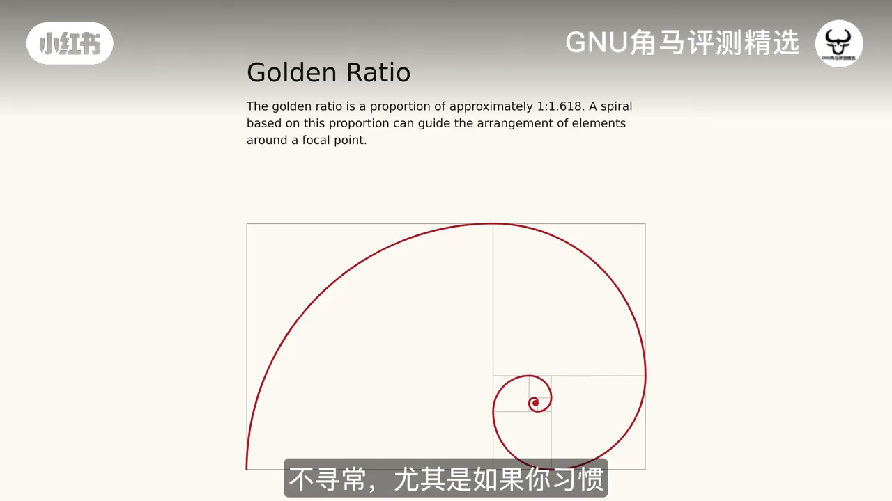
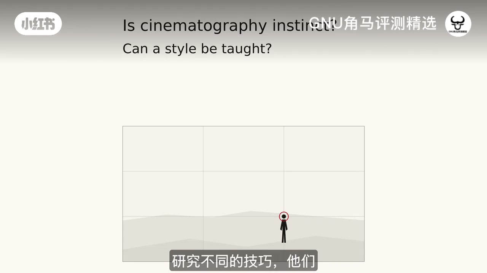
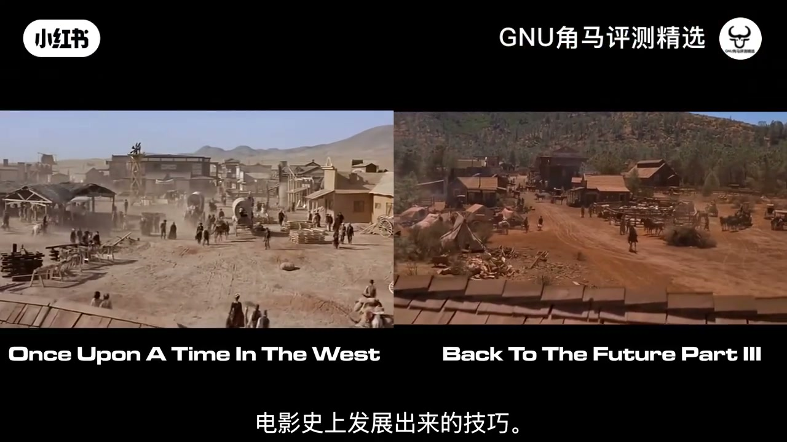

内容要点
机位不是填空题。同一场景，有人要孤独的人与巨大空间，有人要贴脸情绪；覆盖拍法能救剪辑，也会让电影越看越像。真正拉开差异的，是「我看见了什么」以及「我有没有重要理由移动/停留」。
知识结构
狄金斯式孤独大空间；规则懂了仍不会选点；现代机位同质化。
过肩对话好剪但易千篇一律；用长时间观看训练「为何想挪脚」。
《回到未来3》：用一串镜头让观众经历「发现 1885」。
《1917》式一体运动 vs 棚内跟拍改变景别；停留也能制造悬念。
《怒路》居中服务快剪；《新蝙蝠侠》按机位反推城市设计。
多年观看沉淀；无法做成「狄金斯手机」；技术是过程不是公式。
把「规则清单」降级为工具，把「眼睛与理由」升级为主菜单：看多了才会知道自己想站哪里；听摄影指导聊天，学的是过程如何随戏改变，而不是抄一条永远正确的机位公式。
00:00-01:32孤独大空间：规则懂了仍不会放机
作者自陈不擅长拍人群，更喜欢「孤独的人待在很大的地方」，并引用罗杰·狄金斯的解释：看他的一些画面，你会明白他在说什么。有趣的是，另一位摄影指导面对同一场戏，可能更想靠近，或更想看见环境——机位首先是观看偏好，不是标准答案。
很多人把时间花在摄影规则上：三分法、引导线、对称。上场开拍时，这些规则未必告诉你相机该放哪。狄金斯也批评当代影像越来越像：角色总是近景、相似的眼平、相似的光位与调色。规则熟练之后，危险恰恰是「看起来很正确，但每部都一样」。

01:32-04:34对话覆盖好用，但也会抹平差异
经典对话覆盖（主镜头 + 过肩正反打）并非无价值：它给剪辑自由，能控节奏、挑表演、事后微调。问题在于，如果每场谈话都这样拍，电影会迅速彼此相似——尤其大片本有预算探索更多形态时，仍自动回到最稳的覆盖。
替代路径包括：让整场谈话待在一条镜头里，或让相机缓慢推近，让谈话变得更「不舒服」也更有压力。作者把「知道自己想看见什么」追溯到长期观看：像海上钓鱼那样长时间看世界，你会开始对某些光、某个人站在更大环境里的画面格外敏感，却说不清为什么——这种选择力，才是摄影指导看世界的方式。
很多人只要步骤答案：「灯放这还是放那？」但那是你必须自己找的。即便有个人风格的摄影指导，有时仍会为「这一场看起来对」而打破自己的习惯。
04:34-08:22《回到未来3》：让观众经历「发现」
迪恩·昆迪（《万圣节》《侏罗纪公园》《回到未来》系列）在访谈中走过多个场景，解释他与导演为何把相机放在特定位置。例子落在《回到未来3》：马蒂第一次抵达 1885 年的 Hill Valley——观众已花两部电影熟悉这座城，此刻却要看到一百多年前的它。
目标不是「交代地点」，而是让发现成为观众自己的经历。昆迪设计的镜头序列让我们在马蒂的反应与他看见的陌生事物之间来回：相机不断揭示新信息，最后才落到那座观众立刻能认出来的建筑。机位与剪接把这场戏变成一串发现，而不是一张说明性的建立镜头把所有信息一次倒完。
西部片类型记忆也被拿来玩游戏：反派出现时常用低机位让他们更大、更有威胁，把「你认识的西部片进入方式」写进马蒂的主观遭遇。


08:22-11:22不要无故移动；停留也能制造问题
作者的原则很硬：除非有重要理由，不要移动相机。《1917》被当作「运动即叙事结构」的参照——几乎跟着单一角色走，前期必须精密编排，因为运动绑定了表演与场面调度。
对比《回到未来3》棚内杜克与马蒂的谈话：相机跟着走，在某些时刻演员靠近，景别在一条镜头里改变，却不必切到全新设计的正反打。我们看见角色周围的空间，看见他们靠近或分开——这和一组标准近景对切完全不是同一种信息。
当然不是每场对话都应如此。有时近景连接更强；有时若把镜头多留一会，观众会开始问「为什么还不切、要发生什么」——停留本身可以制造紧迫。机位决策同时在空间与时间上发生。

11:22-15:11《怒路》居中与《新蝙蝠侠》按机位造城
《疯狂的麦克斯：怒路》在动作传统里大量使用居中构图。乔治·米勒的理由很实用：片子切得极快时，观众每次切镜都要重新抓「重要信息」；把主体放中间，能在狂暴剪辑里维持可跟读的锚点。构图服务于剪辑速度，而不是为了「破规则」而破规则。
《新蝙蝠侠》走得更远：格雷格·弗雷泽谈到马特·里夫斯在开拍前就花大量时间确立视觉方式，甚至用电脑预演环境。有时准备期认定的「主镜头」开拍几天后被推翻，正确的主镜头其实是另一条——而这种选择会反过来影响演员可走的空间与场景搭建。他们在三维里设计哥谭，使城市服务于预定机位：塔的高低、开合、船坞与企鹅相关场景，都可以从「相机将从哪来」反推。
计划给起点，现场仍要抓惊喜：例如保罗·达诺在柜台后的头的位置，可能比预定构图更好。另一现实是：有的演员第一第二条就最好，有的要到十几条才到位——摄影指导必须让每次开机都尽可能可用。
15:11-18:42直觉无法装进手机；答案在眼睛里
收束到「直觉」：从业多年后仍会遇到没有标准答案的瞬间。有人开玩笑说可以做一支「拍得像狄金斯」的手机，但狄金斯式回应是——他也不总清楚自己在「公式上」做什么，他是在对场景、演员、光线与周围的人起反应。
你可以研究完成片里的站位、镜头与布光，摸到风格轮廓；那仍不一定告诉你「为什么当时做这个决定」或「换一场完全不同的戏他会怎么做」。听这些摄影指导聊天，最重要的是看见过程如何随题材改变：狄金斯与科恩兄弟世界里的疏离人物与空景；昆迪与泽米吉斯让观众经历马蒂抵达；米勒用居中扛住快剪；弗雷泽与里夫斯按角度长出哥谭。
想为一切情况准备一套固定造型创作法很难；摄影指导常避免的，恰恰是「必须如此」的僵硬。学习构图与机位技术能让你更懂画面，但技术只是过程的一部分——另一部分是你带来的、看过的、做过的所有影像。你看得越多、用眼睛选得越勤，才越有机会找到自己的声音。答案不在规则清单的最后一页，在眼睛里。

